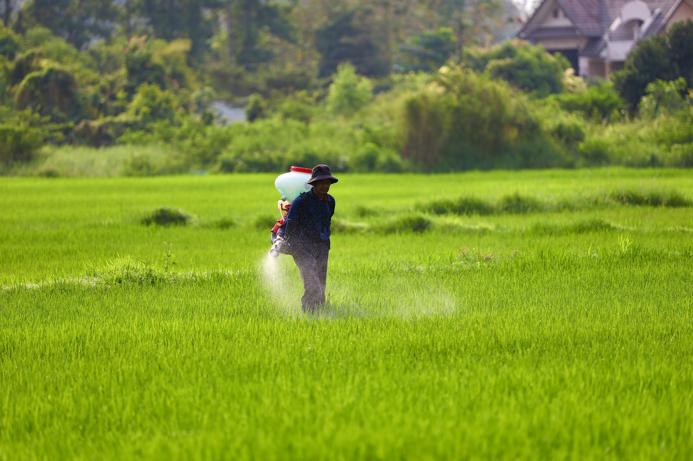

CROP
Empowering farmers with ML-driven crop recommendation for optimized yield.
Explore Crop Services

FERTILIZER
Leveraging machine learning for precise fertilizer recommendations tailored to your crops.
Discover Fertilizer Solutions
CROP DISEASE
Our ML-based disease prediction aids in early detection and proactive management for healthier crops.
Combat Crop Diseases